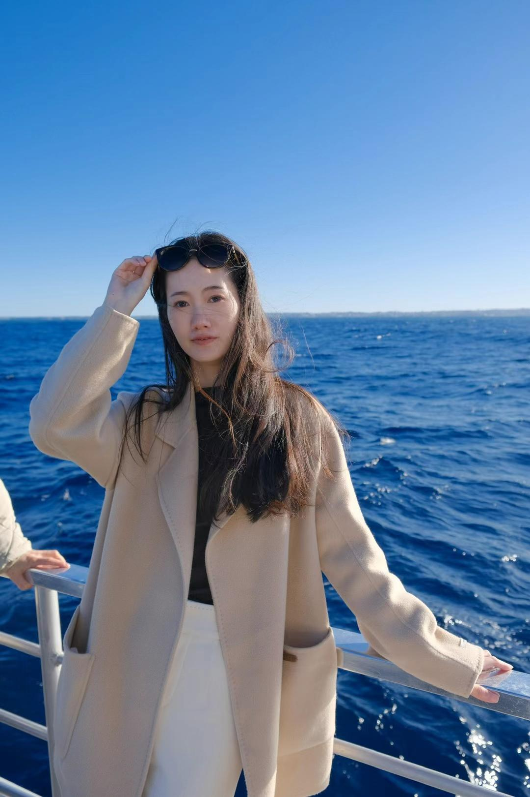

数据分析
& 归因
数据清洗、动态看板、用户留存、活动漏斗与效果复盘。
About me

在理性的数字世界里寻找规律，也在感性的视觉世界里创造共鸣。
我是赵烨，悉尼大学金融与数据分析硕士。金融、数据与管理科学的复合背景，让我能够从商业目标出发理解问题：既有企业筛选、信用风险核查、行业研究与财务数据分析经验，也能使用 Python、Excel 和 Tableau 将复杂信息转化为清晰的判断依据。
与此同时，我持续探索内容运营与视觉创作的增长价值。从游戏活动、校园传播到海外 Discord 社群，我会用数据拆解用户行为和传播效果，也借助 AIGC 与商业插画构建更有感染力的内容体验。我希望让每一次创意都有依据，也让每一组数据都拥有故事。
Capabilities
数据是坐标，创意是引力，运营让二者形成真实的增长轨迹。
数据清洗、动态看板、用户留存、活动漏斗与效果复盘。
AI 视频工作流、商业插画、视觉包装与故事化内容策划。
爆款内容、游戏活动、KOL / KOC 矩阵与海外社区运营。
Education
研究方向为用户行为分析、内容传播效果评估、平台运营模式研究，关注数字内容与游戏市场。
工科与管理交叉背景，获国家级设计奖项、西北赛区一等奖及校级优秀学生干部。
Experience
Selected projects
从政策数据洞察到全球化游戏运营，用分析、内容与视觉建立可执行的增长路径。
数据分析师 / Tableau 可视化设计
使用 Tableau 搭建泰国数字游民政策洞察与竞争力分析看板，对全球数字游民出行、目的地分布、停留时长及城市偏好数据进行清洗与可视化分析。设计地图、趋势图、排名图、双轴图及日期筛选等交互功能，重点分析泰国在全球目的地中的排名、平均停留时长及主要聚集城市，识别曼谷、清迈、普吉等核心数字游民枢纽，为签证政策优化、目的地营销及旅居服务设计提供数据依据。
海外运营 / 市场营销策划
参与《神曲H5》海外市场内容运营与用户增长工作，重点面向北美及南美市场，负责 Discord、Reddit、Instagram、TikTok、Facebook 等海外平台的内容策划、发布及社区维护。结合游戏版本更新、节日节点与用户偏好，设计抽奖、解谜、互动问答等社区活动，提炼游戏核心卖点并完成英文传播内容包装。跟踪用户反馈、活动参与及社区互动表现，协助优化活动机制与内容方向，提升海外玩家活跃度、参与感及品牌认知。
校园营销策划 / 内容运营
参与王者荣耀高校联赛校园推广及线下活动运营，围绕高校年轻用户制定内容传播与赛事宣传方案，负责活动卖点提炼、宣传内容策划、校园渠道协同及现场执行，并策划学生解说、线下大屏展示等互动形式。参与 KOL 分层传播方案，根据账号体量及内容属性匹配不同传播任务；推动“王者风物志 × 西安美术学院”跨界合作，以剪纸定格动画融合游戏 IP 与传统文化。
新媒体运营 / 视觉设计
参与学校官方微信公众号及校园新媒体平台的内容策划、编辑排版与视觉设计，围绕校园新闻、主题宣传及重要活动完成选题策划和内容制作。负责文章结构优化、标题包装、图片处理及推文发布，结合热点话题和学生阅读习惯提升传播效果。同时参与校园文化周边及宣传物料设计，使用 Photoshop、Procreate 等工具完成插画、海报和视觉元素制作，提升官方内容的视觉统一性与青年化表达。
Creative works
影像、包装、表情与数据可视化，是我理解世界的不同语言。
以美智子的角色身世为叙事切口，用“相遇—破碎—堕落”完成 30 秒情绪弧线；通过黑、红、白剪影与美人相 / 般若相反转，让泛娱乐潜客先对角色产生共情，再建立游戏探索欲。
极简剪影 · 形态反转 · 女性觉醒 · 音乐卡点 · 潜客转化
围绕西电校园文化与中秋节点，将校徽、1931、航天意象和节日祝福整合为统一的六边形礼盒视觉系统，让校园记忆转化为可分享的节日内容。
数据来源：西安电子科技大学官方推文
以西电拟人化 IP 为核心，构建覆盖问候、学习、困惑、鼓励与晚安等校园日常语境的系列表情，用轻量视觉语言提升 IP 亲和力与传播效率。
数据来源：微信表情开放平台后台
以跨城市流动、停留行为与热门聚集地为分析核心，为泰国政策制定者识别数字游民趋势，并设计更精准、更具影响力的吸引与留存策略。
政策洞察 · 城市热点 · 停留时长 · 全球流动 · 目的地竞争力